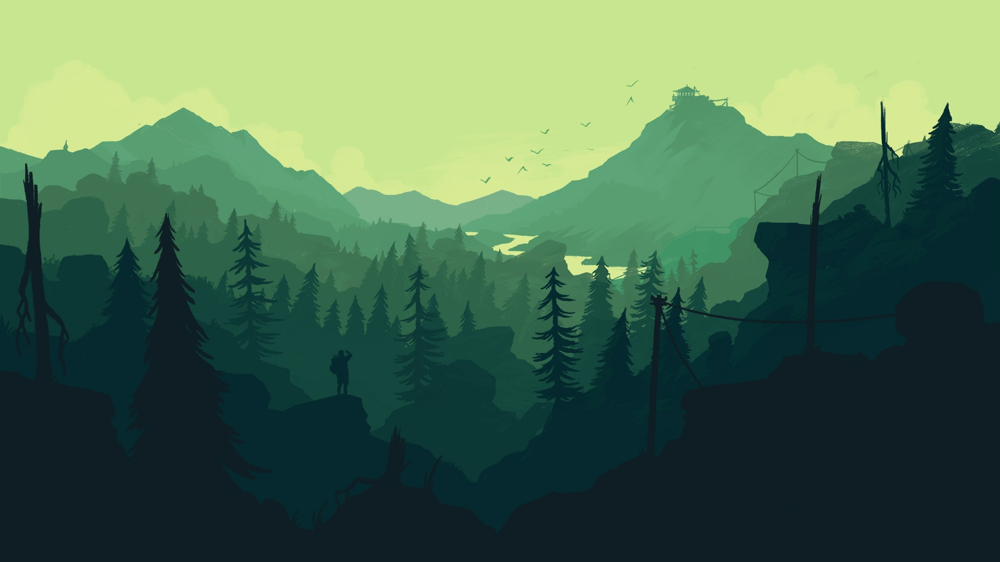

bois Mystiques
Automne 2018
tiM-629 créAtion Vidéo 2
Bois mystiques est une courte animation 2D que j'ai créé dans le logiciel Adobe After Effect, pour mon cours de Création vidéo II en Techniques d'intégration multimédia au collège de Maisonneuve.
démonstration du résultat final :
pRocessus de créAtion
1 - Recherches d'inspiRAtions
Tout d'abord, j'avais envie de créer un décors mystérieux et représentatif de la nature, tout en gardant une gamme de couleur monochromatique et des éléments modernes. Je me suis donc inspiré des paysage 2D en silhouette afin de construire mon décors et de la tendance "low poly" pour les animaux.
- 

pRocessus de créAtion
1 - Recherches d'inspiRAtions
Tout d'abord, j'avais envie de créer un décors mystérieux et représentatif de la nature, tout en gardant une gamme de couleur monochromatique et des éléments modernes. Je me suis donc inspiré des paysage 2D en silhouette afin de construire mon décors et de la tendance "low poly" pour les animaux.